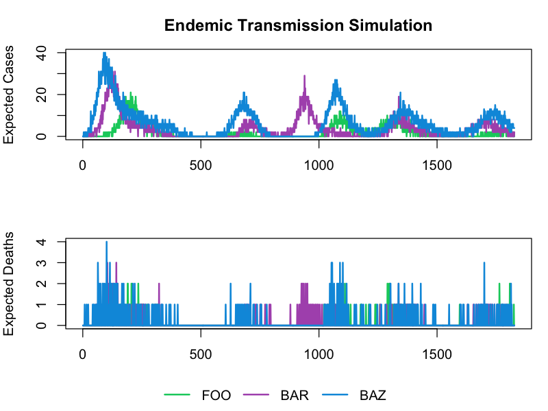

Overview
This guide shows how to run single LASER simulations using the
run_LASER() function with deterministic parameters. LASER
(Light-agent Spatial model for ERadication) is the core simulation
engine that simulates cholera transmission dynamics.
For running multiple simulations with parameter stochasticity and uncertainty quantification, see the Running MOSAIC vignette.
Before you begin: Complete the Installation vignette to set up MOSAIC and its dependencies.
Quick Start
MOSAIC includes pre-configured parameter sets for different transmission scenarios. Let’s run and visualize two key scenarios: epidemic and endemic transmission.
Epidemic Scenario
The epidemic configuration simulates outbreak dynamics with explosive growth patterns typical of cholera epidemics.
library(MOSAIC)
# Run epidemic scenario
config <- MOSAIC::config_simulation_epidemic
model_epidemic <- run_LASER(config = config, seed = 123, quiet = TRUE)
# Extract time series results (convert Python objects to R matrices)
cases_epidemic <- as.matrix(model_epidemic$results$expected_cases)
deaths_epidemic <- as.matrix(model_epidemic$results$disease_deaths)
# Get metadata
locations <- config_simulation_epidemic$location_name
n_locations <- length(locations)
n_timesteps <- ncol(cases_epidemic)
# Calculate total burden
total_cases_epidemic <- sum(cases_epidemic, na.rm = TRUE)
total_deaths_epidemic <- sum(deaths_epidemic, na.rm = TRUE)
cat(sprintf("Epidemic Scenario Results:\n"))
#> Epidemic Scenario Results:
cat(sprintf(" Total cases: %s\n", format(total_cases_epidemic, big.mark = ",")))
#> Total cases: 10,479
cat(sprintf(" Total deaths: %s\n", format(total_deaths_epidemic, big.mark = ",")))
#> Total deaths: 258
cat(sprintf(" Locations: %d\n", n_locations))
#> Locations: 3
cat(sprintf(" Time steps: %d\n", n_timesteps))
#> Time steps: 366
# Plot epidemic time series by location
png("figures/running_mosaic_epidemic.png", width = 800, height = 600, res = 120)
colors <- c("#009ADE", "#FF1F5B", "#00CD6C") # Blue, Pink, Green
par(mfrow = c(2, 1), mar = c(3, 4, 3, 1), oma = c(2, 0, 0, 0))
matplot(t(cases_epidemic), type = "l", lty = 1, lwd = 2, col = colors,
xlab = "", ylab = "Expected Cases",
main = "Epidemic Transmission Simulation")
matplot(t(deaths_epidemic), type = "l", lty = 1, lwd = 2, col = colors,
xlab = "Time step", ylab = "Expected Deaths", main = "")
par(fig = c(0, 1, 0, 1), oma = c(0, 0, 0, 0), mar = c(0, 0, 0, 0), new = TRUE)
plot(0, 0, type = "n", bty = "n", xaxt = "n", yaxt = "n")
legend("bottom", legend = locations, col = colors, lty = 1, lwd = 2,
horiz = TRUE, bty = "n", xpd = TRUE)
dev.off()
#> agg_png
#> 2
cat("Saved: figures/running_mosaic_epidemic.png\n")
#> Saved: figures/running_mosaic_epidemic.png
Endemic Scenario
The endemic configuration simulates stable, persistent transmission patterns with seasonal fluctuations.
# Run endemic scenario
config <- MOSAIC::config_simulation_endemic
model_endemic <- run_LASER(config = config, seed = 123, quiet = TRUE)
# Extract time series results (convert Python objects to R matrices)
cases_endemic <- as.matrix(model_endemic$results$expected_cases)
deaths_endemic <- as.matrix(model_endemic$results$disease_deaths)
# Calculate total burden
total_cases_endemic <- sum(cases_endemic, na.rm = TRUE)
total_deaths_endemic <- sum(deaths_endemic, na.rm = TRUE)
cat(sprintf("Endemic Scenario Results:\n"))
#> Endemic Scenario Results:
cat(sprintf(" Total cases: %s\n", format(total_cases_endemic, big.mark = ",")))
#> Total cases: 22,273
cat(sprintf(" Total deaths: %s\n", format(total_deaths_endemic, big.mark = ",")))
#> Total deaths: 581
# Plot endemic time series by location
png("figures/running_mosaic_endemic.png", width = 800, height = 600, res = 120)
colors <- c("#00CD6C", "#AF58BA", "#009ADE") # Green, Purple, Blue
par(mfrow = c(2, 1), mar = c(3, 4, 3, 1), oma = c(2, 0, 0, 0))
matplot(t(cases_endemic), type = "l", lty = 1, lwd = 2, col = colors,
xlab = "", ylab = "Expected Cases",
main = "Endemic Transmission Simulation")
matplot(t(deaths_endemic), type = "l", lty = 1, lwd = 2, col = colors,
xlab = "Time step", ylab = "Expected Deaths", main = "")
par(fig = c(0, 1, 0, 1), oma = c(0, 0, 0, 0), mar = c(0, 0, 0, 0), new = TRUE)
plot(0, 0, type = "n", bty = "n", xaxt = "n", yaxt = "n")
legend("bottom", legend = locations, col = colors, lty = 1, lwd = 2,
horiz = TRUE, bty = "n", xpd = TRUE)
dev.off()
#> agg_png
#> 2
cat("Saved: figures/running_mosaic_endemic.png\n")
#> Saved: figures/running_mosaic_endemic.png
Getting Help
-
Package documentation:
help(package = "MOSAIC") -
Function help:
?run_LASER,?make_LASER_config - Report issues: https://github.com/InstituteforDiseaseModeling/MOSAIC-pkg/issues